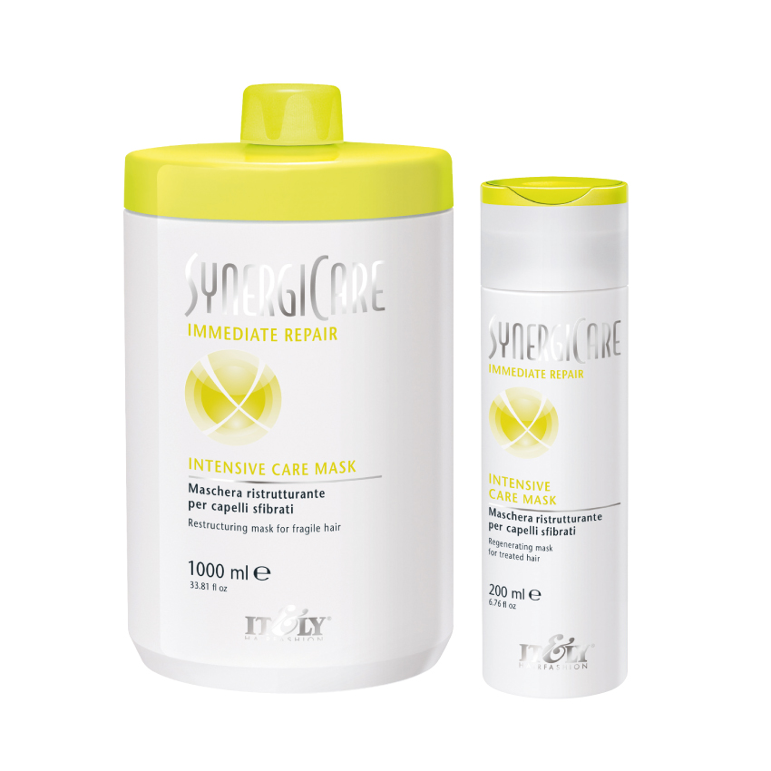

 |
INTENSIVE CARE MASKExtraordinaria máscara reestructurante específica para cabellos muy dañados. La exclusiva Phyto keramix combinada con proteínas de trigo y ceramidas crea un film protector del cabello. El pH ácido controlado asegura el cierre de la cutícula con un look más saludable. En caso de un cabello áltamente dañado recomendamos un tratamiento intensivo bajo fuente de calor para restaurar la estructura fisiológica del cabello. Así el cabello recobrará su brillo, suavidad y cuerpo. Modo de uso. Distribuir la máscara sobre el cabello lavado y húmedo y masajear. Frasco de 200 y 1000 ml. |